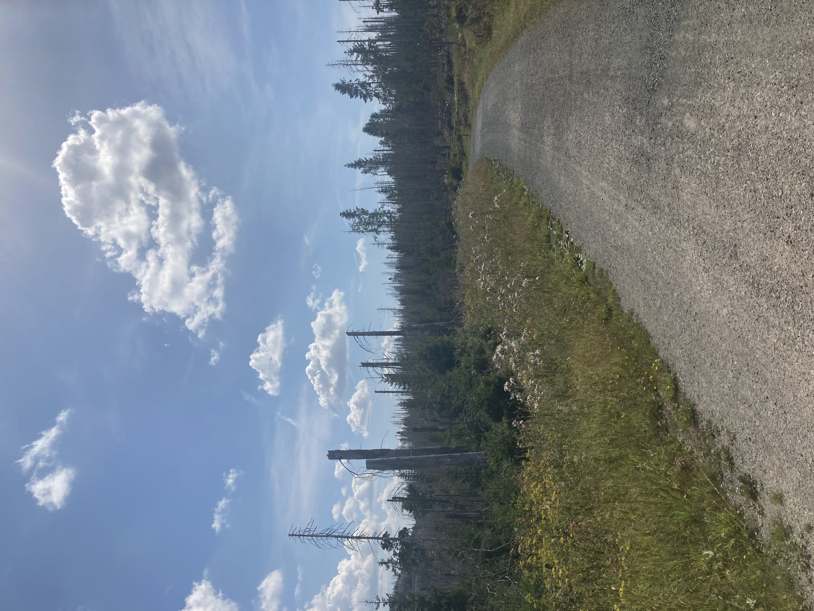

Vegetation Map

For this assignment, I chose to build and compare the map of Harz. Harz is a region in the middle of Germany. A part of it is reserved as the Harz National Park. The park is part of the Natura 2000 network of the European Union. Rare animals like the white-throated dipper, the black stork, peregrine falcon, the European wildcat, and especially the Eurasian lynx live in this forest area. However, the Park has been struggling under climate change. Especially through the outbreak of the bark beetles in 2018.
To analyze the vegetation indices, I used ortmosaic, satellite images that are collected and merged into a single map. I downloaded the Multispectral Satellite Imagery data, captured and classified different wavelength lights, from Google Earth Engine. This technique is commonly used for monitoring vegetation health and observing land cover and land use. Therefore, this technique is significant for forest conservation and land use planning. One example of such satellites is Sentinel 2. It is a land‑monitoring constellation of polar‑orbiting satellites operated by the European Space Agency (ESA) under the Copernicus Programme.
To see what is happening on the Earth's surface, it is important to use pictures with no clouds. To achieve this, pictures from many different dates are collected. In this Picture, pictures from July to December of 2017 and 2025, respectively, are patched together. Even with this decent time length, it was hard to make a picture with no clouds, even harder in humid or coastal regions.


Vegetation index is calculated from two or more spectral bands, and it can be used to estimate factors of the designated area, such as the biomass, plant health, or productivity. The most used Vegitaion index is NDVI, the Normalized Difference Vegetation Index, and It compares how much near‑infrared (NIR) light, such as blue light, vegetation reflects to how much red light it absorbs.
Function: NDVI= (NIR-Red)/(NIR+Red)
In this way, we can point out the healthy vegetation with high NDVI, because it reflects more NDVI and less red light.


Time is one of the most important factors for orthomosaic since vegetation and land use change all the time, even within a year.
Lastly, I calculated the difference in NDVI between Harz in 2017 and 2025.
Function: NDVI2017-NDVI2025

If the value is positive, the NDVI has worsened over the 7 years, and if negative, it has improved. Since the forest part is blue, meaning a negative value, it means the NDVI has improved from 2017 to 2025. However, the National Park Harz is still struggling from the bug catasthropy while the outbreak was after 2017. One possible explanation why the NDVI improved while the forest health has worsened is that since the tall bark trees have died out, trees and grass have come out, resulting in a greener reflection on the satellite image. Therefore is always important to have a look at multiple data types and consider the weaknesses and strengths of the method when leading research.
